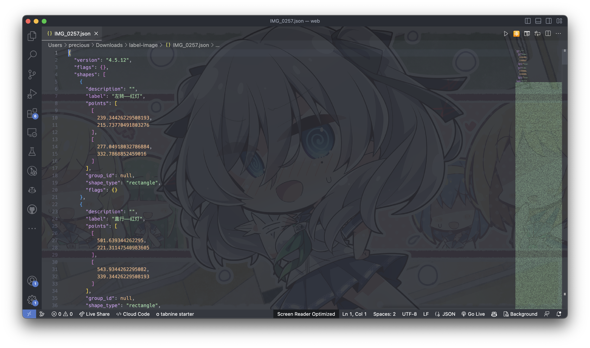

Ultralytics官方文档
在ultralytics官方文档中，有着客制化数据集训练的教程。
Labelme数据标注问题
教程中显示，yolo格式的标签为*.txt。使用labelme进行数据标注最大的问题是labelme的格式是需要转换才能被yolo模型所使用。因此，我们花费一定精力找寻可以转化的办法。
分析json格式的标签文件
Labelme2YOLO项目
幸运的是，我们在GitHub上找到了一个名为 Labelme2YOLO 的开源项目。

https://github.com/rooneysh/Labelme2YOLO
此脚本仅需一条命令，便可将json格式的数据标签，转化为YOLO格式的数据文件夹，并生成对应的yaml文件。